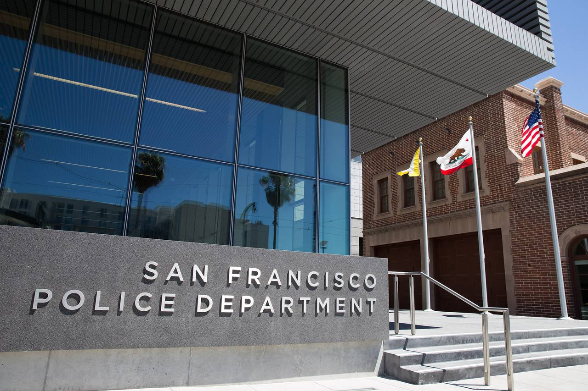
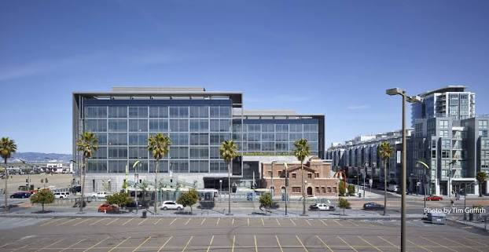
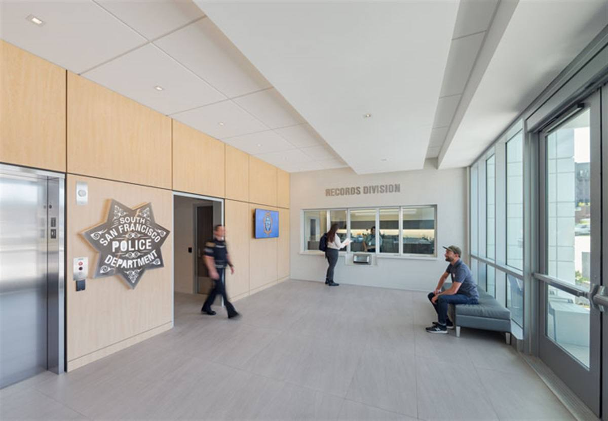
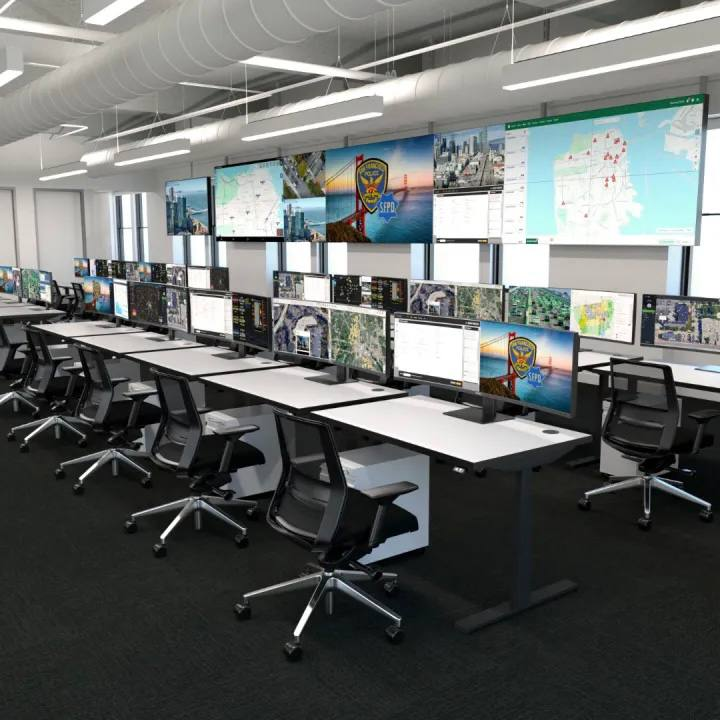
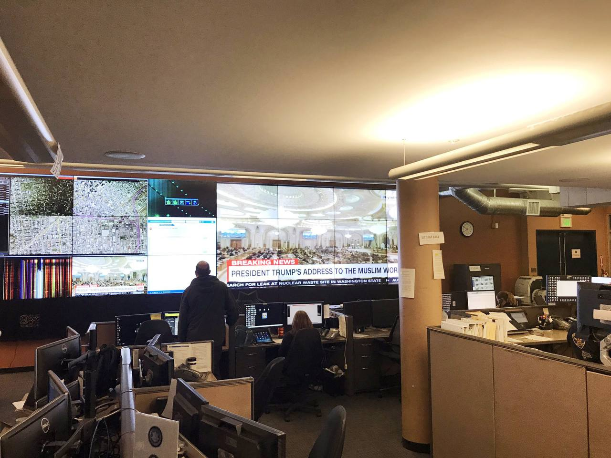

Место, где закон и порядок это часть повседневной работы. Внутри расположены кабинеты сотрудников, комнаты для допросов, архивы и помещения для хранения улик. Вдоль стен стоят металлические шкафы и ящики для оружия, боеприпасов и личного снаряжения. Доступ в служебные помещения ограничен электронными замками и пропусками. Коридоры и рабочие зоны находятся под наблюдением камер, а важные доказательства хранятся в специальных защищенных ячейках.





